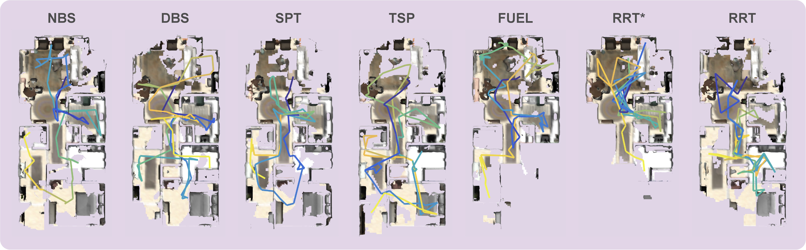

Drag the budget slider and switch between criteria to see which path each method selects
| Path | g(p) | c(p) | Score q(p) |
|---|
Active perception is a fundamental problem in autonomous robotics in which the robot must decide where to move and what to sense in order to obtain the most informative observations for accomplishing its mission. Existing approaches either solve a computationally expensive traveling salesman problem (TSP) over heuristically selected informative nodes, or adopt a more efficient but overly constrained shortest path tree (SPT) formulation.
To address these limitations, we explore beam search algorithms as scalable alternatives. While the standard beam search provides scalability by preserving the top-B paths at each depth level, it is prone to local optima and exhibits parameter sensitivity. Our first contribution is a node-wise beam search (NBS) algorithm, which maintains top-B candidates per node to enable more effective exploration of the solution space. Systematic benchmarking on graphs shows that NBS consistently outperforms all baselines and maintains strong performance even at low beam widths.
As a second contribution, we integrate the concept of frontiers into the path selection criterion, introducing the expected gain metric, which better balances exploration and exploitation compared to existing alternatives.
Our third contribution proposes the rapidly-exploring random annulus graph (RRAG), a novel graph construction method that preserves full orientation sampling and ensures connectivity in cluttered environments through a fallback local sampling-based planner.
Extensive experiments demonstrate that NBS combined with RRAG achieves the highest performance across all three representative active perception tasks, outperforming state-of-the-art algorithms by at least 20% in one or more tasks. We further validate the approach on real robotic platforms in different scenarios.
We formulate active perception as a budget-constrained path optimization on a directed graph $\mathcal{G} = (\mathcal{V}, \mathcal{E}, g, c)$ with vertex gains $g(v) \geq 0$ and positive edge costs $c(e) > 0$. The objective is to find a path $p^*$ starting from $v_s$ that maximizes the accumulated gain under a cost budget:
$$p^* = \arg\max_{p \in \mathcal{P}} \; g(p) \quad \text{subject to} \quad c(p) \leq C$$where $g(p)$ aggregates gains over the set of unique vertices visited and $c(p)$ sums edge costs along the path. We study this problem under three progressively more realistic settings:
(i) Full graph known; optimal path drawn
(ii) Nodes discovered as robot moves
(iii) Graph built from free space
The choice of selection criterion determines how candidate paths are ranked. We consider three criteria:
Drag the budget slider and switch between criteria to see which path each method selects
| Path | g(p) | c(p) | Score q(p) |
|---|
Motivation. The standard beam search — depth-wise beam search (DBS) — retains the top $B$ paths globally at each search depth. This makes it prone to local optima: once the beam converges on the same high-gain region, all $B$ paths can terminate at the same node. Performance is also sensitive to the choice of $B$.
Key idea. NBS instead maintains the top $B$ paths per node. This guarantees at least one promising path at every visited node, encouraging broader exploration of the graph and making NBS robust even at $B=1$. Its time complexity is $O(|\mathcal{E}|\,D\,B\,(D + \log B))$ and its space complexity is $O(|\mathcal{V}|\,D\,B)$.
RRAG is an incrementally built graph for active perception, inspired by the Rapidly-exploring Random Graph (RRG). It enforces two spacing rules that give it an annulus structure:
Key properties:
Before deploying in active perception, we benchmark all algorithms on abstract graphs in two progressively harder settings: graph a priori and graph online perception. We evaluate clustered and scattered gain distributions at two graph scales (25 × 25 m and 50 × 50 m), across all combinations of selection criteria and replanning strategies.
| NBS (ours) | DBS | SPT | TSP | |
|---|---|---|---|---|
| Computation time | Medium | Low–Med. | Low | Med.–High |
| Gain | Highest | High | Medium | Low |
| Parameter sensitivity | Low | High | Low | High |
| Path selection sensitivity | Low | High | High | N/A |
Key takeaways. In both settings, NBS achieves the highest gains with minimal sensitivity to beam width or path selection — even $B=1$ delivers strong results. In the online perception setting, the expected gain criterion outperforms path gain and path ratio by explicitly rewarding exploration of frontier regions. This criterion is adopted for all following active perception experiments.
NBS achieves the highest normalized performance across all three representative active perception tasks: point collection (0.50), surface reconstruction (0.49), and volumetric exploration (0.77). It outperforms state-of-the-art methods by at least 20% in one or more tasks. NBS is particularly strong in point collection, where the sparse gain distribution causes other methods to get trapped in local optima.

Qualitative comparison of surface reconstruction quality across planners. NBS achieves the most complete coverage (445.73 m²).
We validate our approach on the ANYmal quadruped robot equipped with a ZED X Mini camera, running the full planning and perception pipeline onboard. Experiments span autonomous surface reconstruction in indoor/outdoor environments and volumetric exploration in a cafeteria and lab. See the hardware experiment videos for qualitative results across all scenarios.
@article{qu2026efficient,
title = {An Efficient Beam Search Algorithm for Active Perception in Mobile Robotics},
author = {Qu, Kaixian and Wang, Han and Klemm, Victor and Cadena, Cesar and Hutter, Marco},
journal = {The International Journal of Robotics Research},
year = {2026}
}This research was supported by the Swiss National Science Foundation through the National Centre of Competence in Digital Fabrication (NCCR dfab), by Huawei Tech R&D (UK) through a research funding agreement, and by an ETH RobotX research grant funded through the ETH Zurich Foundation.